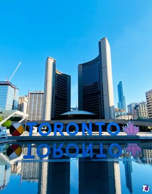

Introduction
During my second coop term, I extended my contract from my previous term in the Summer. Although I did much of the same things, I had more goals and responsibilities during this term. I had been working at the City of Toronto for 8 months at the start of this term (a full year now), so I was very familiar with the buisiness and technical side of the Cybersecurity Division.Employer
At the OC (Office of the CISO), the main goal is to secure the City of Toronto's applications and networks, and there are many different teams that support that goal. The team I am working on is called Cyber Engagement, which generally deals with the "frontend" side of operations. We interface with other divisions in the city to help them become or remain more cyber safe. I specifically work on the Strategic Transformation team, which configures solutions to help the OC run. During my time here, I have both programmed tools for many teams in the OC, as well as configured and implemented multiple solutions from vendors contracted by the OC. During this last term, I also ran trainings for the use of these tools for within the OC.
Goals
Again, at this point I had worked for the OC for 8 months. I had a pretty good understanding of the underlying concepts of the company and how everything worked. I wanted to go further than just doing the activities of a coop student, and wanted to be more invested into the actual work environment and roles within the business side of things.I wanted to be included in meetings with external vendors and clients
This fall, I wanted to extend on my work from the past 2 summers. For some technologies that we used (such as our Jira instance, or some backend automation code), I was the most well versed in the OC. I wanted to be able to use this familiarity and skill to be more included in the buisness aspect of things. Working with various project managers, I was able to be included in meetings and discussions with external vendors to do with Jira and our existing automation.
I wanted to be able to create well documented code
Last summer while working at the city, I created documentation for my code, however it wasn't of the best quality. This semester, I wanted to learn how to better my documentation and make it readable by many different skill levels. To achieve this goal, I started my documentation early and with the goal of making it as clear as humanly possible. I also refined my documentation further as I worked through it with different people. At the end of the semester, I had documentation that I am a lot more proud of than my previous attempts.
I wanted to understand the project management workflow better
During these last 8 months of my coop, I have really felt part of the team. I wanted to explore this and see the different oppertunities within the team. To do this, I asked if I could help with parts of the project not solely todo with development. This also went hand in hand with the Project Management class I was taking at the time. Even though being the lead developer on a project was a big responsibility, I enjoyed learning new things about the overall structure and workflow of the project.